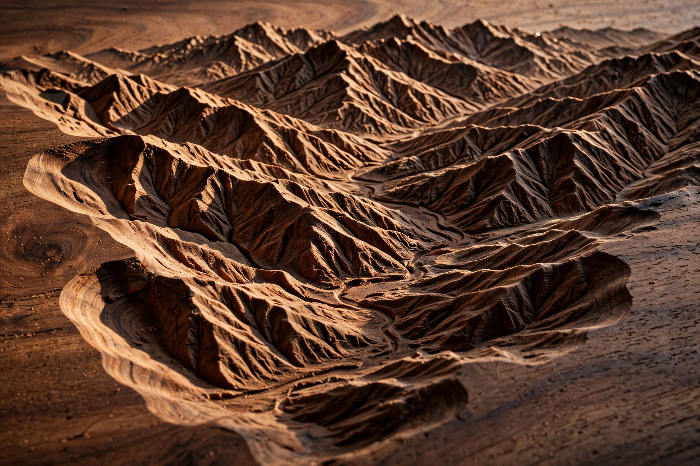
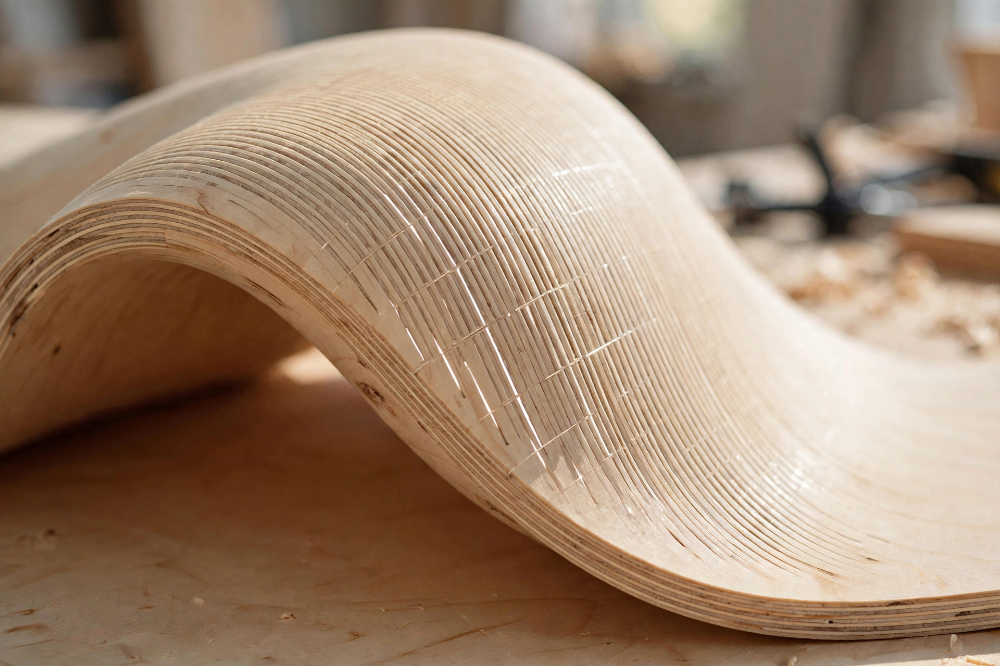
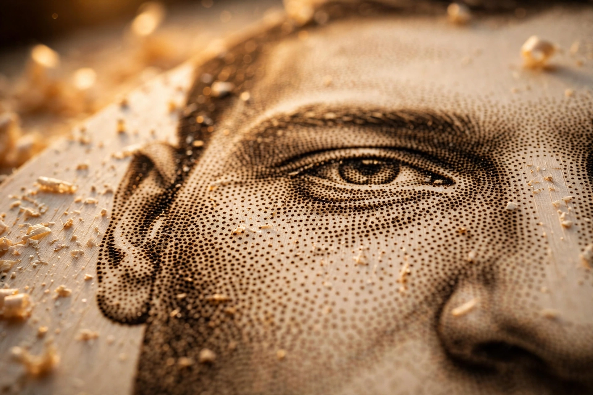
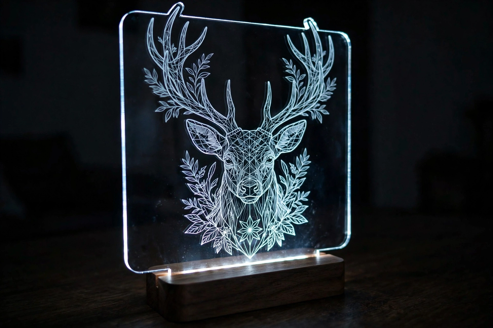
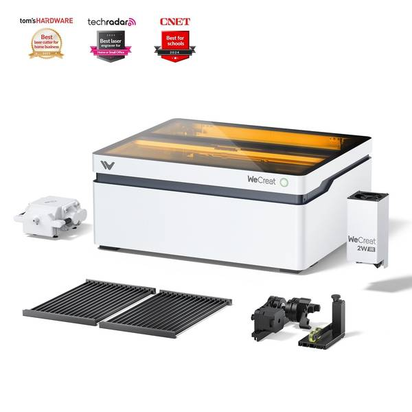
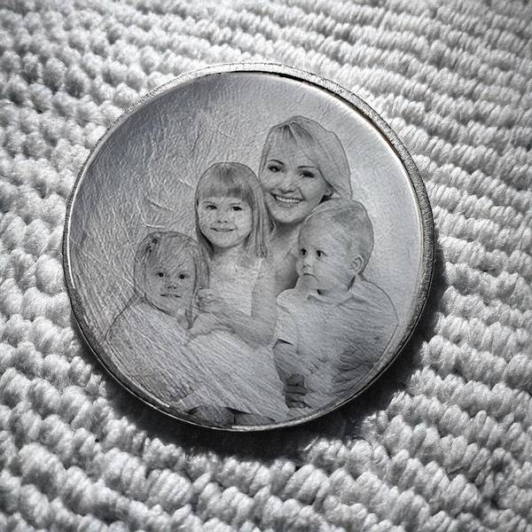

896 projects for the WeCreat Vision Pro 45W — tap a card to download the actual file
The tricks behind the wow — what each technique really is, and why it hits so hard. Vol. 1 — more coming.

What it is: a grayscale photo carved into real topography — mountains you can feel with your fingertip.
The trick: the software reads brightness as height. White stays high, black cuts deep, and the laser varies power continuously in a single pass to sculpt between them. Newer workflows even generate the depth map from any photo with AI, then engrave it.
Why it's awesome: your diode stops marking surfaces and starts sculpting. A scrap of walnut comes out looking CNC-milled, and every piece is one of one.
My take on your machine: be honest with yourself here — diode "3D" is shallow grayscale shading, about 1–2mm deep in basswood at best. That's plenty for the wow factor, but it's relief shading, not router work. Run it in LightBurn (grayscale power modulation), 150–250 DPI — your 0.08mm spot tops out around 317 DPI so anything higher just doubles job time for nothing. Start on cheap pine; walnut is for piece number three, not piece number one.

What it is: rows of fine cuts that turn rigid plywood into something that bends like fabric.
The trick: the kerf — the sliver of material the beam vaporizes — becomes the mechanism. Each slit is a tiny hinge; hundreds of them share the bend so nothing snaps.
Why it's awesome: curves with zero hardware, zero glue, zero steam-bending. Rounded box lids, bracelets, lampshades — all from one flat sheet.
My take on your machine: this is pure cutting, which is the 45W's happy place — 3mm birch drops in one pass. But the #1 cutting upgrade applies double here: fast multi-pass beats one slow scorcher. Run 85–90% power, never 100% for long stretches (it cooks the diode and chars the kerf, and charred kerfs snap instead of flexing). Air assist ON, honeycomb tray underneath. And measure your actual kerf — cut a 25mm square, caliper the square vs. the hole, divide by two — because hinge patterns live or die on kerf math. Always cut a small test strip first: hinge spacing vs. thickness is everything.

What it is: photorealistic portraits from a machine that can only burn or not-burn. There is no gray setting.
The trick: Stucki or Jarvis dithering converts shades of gray into dot patterns — dense dots read as dark, sparse dots as light. Your eye blends them back into tones at arm's length. It's newspaper print, burned with light.
Why it's awesome: it's an optical illusion you manufacture. A $1 ceramic tile becomes a keepsake that makes people gasp — and photo work is the one thing that can't be commoditized, because nobody else has that photo.
My take on your machine: the 45W's 0.08mm spot makes it a genuinely elite photo-engraving machine — at equal wattage a diode out-engraves a CO2 for surface marking. But hear me: bad photo engraving is a bad file, never the machine. The workflow is ImagR (tonal correction → grayscale → resize to final DPI → dither LAST), 150–300 DPI sweet spot. Do your photo work in LightBurn — it's the only serious choice for dithering and test grids. And run a dot-burn-time test on scrap first: fire single dots at increasing power until you find the clean-mark threshold, then build from there. Faint marks after good settings? Clean the lens before you touch a single number.

What it is: engraved lines in clear acrylic that trap LED light and glow.
The trick: light enters the edge of the sheet and bounces inside it until it hits an engraved groove, which scatters it toward your eyes. The engraving is the light fixture. Mirror the design and engrave the back face for a floating effect.
Why it's awesome: a $2 acrylic blank plus a $5 LED base looks like an $80 gallery sign. Fastest wow-per-dollar in the whole library.
My honest take on your machine: this one needs a straight answer. Your 445nm blue beam passes straight through clear acrylic — it physically cannot cut it or directly engrave it. The workaround is a frost coat (thin dish-soap film or paint mask) plus low power to haze the surface, and it does work — but I won't pretend it's the diode's best trick. It's CO2's home turf. If you love the look, do it: cast acrylic (engraves cleaner than extruded), low power, high speed, LED base, and never try to cut the stuff. Just know you're fighting physics for style points — sometimes style points are worth it.
Verified deal-hunt winners — prices last checked Oct 14, 2026; nothing purchased yet
The logic behind every file on this sheet. Full version: download the PDF.
Vision Pro starting points: 3mm basswood cut ≈ 300mm/min @85%, 1 pass, air on. Engrave wood ≈ 6000mm/min @30%. Slate ≈ 4000mm/min @60%. Always verify on scrap.
Use M04 dynamic power only. Constant Power (M03) is effectively broken on this machine — power changes are ignored and the machine overrides your set speed (text cut through 3mm ply at 10,000 mm/min @ 50%). Never enable Constant Power. If a LightBurn job ignores your power/speed, check that first. MakeIt is unaffected.
Wood engrave, dark regimes (3mm basswood/birch, LightBurn M04): solid fill 150 mm/s @ 80%, 1 pass, LD ~100, air OFF for the darkest fill (air ON = a lighter mark); vector line 75 mm/s @ 75%, 1 pass, air ON. The 275 mm/s @ 50% photo row is the light-tone point — a different ladder rung, not a conflict. Grid 70/80/90% × 133/150/200 mm/s; start low on basswood (softer than birch).
Cut: 6mm birch/basswood now 1 pass @ 8 mm/s @ 100% (the old “≈2 passes” ceiling is retired); 3mm laminated HDF 15 mm/s @ 100%, 1 pass; 5mm black/dark acrylic 1 pass @ 5 mm/s @ 90% — try that before falling back to 2 passes. 3mm basswood cut: if 10 mm/s @ 100% chars, speed up to 15–16 mm/s before dropping power.
Kerf: same-machine fit test on 3mm HDF — vertical slots ~0.0mm, horizontal ~−0.125mm. X/Y asymmetry is real; check both axes on joinery. Depth: soft pine clean to ~27mm in 2 passes, 39mm in 3 with a rough edge; 10–12mm is the comfortable everyday ceiling.
Sources: Middle Room Workshop + Matete, same machine, Nov 18, 2026 cross-check. All starting points — test grid first. ABS stays never-cut.
Kerf (3mm ply): 0.08–0.15mm starting band, up to 0.20mm on slow/heavy cuts. LightBurn Kerf Offset = half the measured kerf (0.15mm kerf → 0.075mm offset). Line mode, closed shapes only; never compensate twice (software offset + drawn offset — pick one).
X/Y asymmetry is real: measure kerf per axis. Same-machine hint (Middle Room, 3mm HDF): vertical slots ~0.0mm, horizontal ~−0.125mm. The Vision Pro claims a square 0.08×0.08mm spot — do not trust it until measured. 45° rotation fix: for right-angle joinery where X-fit and Y-fit must match, rotate job + material 45°, measure kerf at 45°, use that single value. Straight 90° lines only — useless for curves; costs bed space.
Box-joint clearances (3mm ply, after kerf compensation): slip +0.10mm (3.10mm slot for 3.00mm tab); snug glue fit +0.03mm; press fit −0.05mm; hard press −0.10mm (dense wood only). Finger width 2–3× thickness, odd count, min ~10mm. Round inside slot corners to ≥½ kerf radius.
Sheet thickness warning: "3mm" ply actually measures 2.6–3.3mm — design slots to the thickest reading. A finger standing proud is a thickness problem, not a kerf problem. 6mm taper: kerf tapers in thick stock (0.30mm top / 0.14mm bottom in 6mm) — focus ⅓ into the sheet; pick one reference face.
Living hinges (3mm ply): 30mm slots, 3mm bridges, 5mm row spacing, staggered; test a 60mm strip first. Bridges below ~1.5mm snap. Bend radius: 30mm+ safe, 15–18mm aggressive (test-strip only). Finite-life feature, not a mechanism. Inlay: enlarge inlay piece 0.05–0.10mm outward; firm press-in golden parameter 0.15mm offset. Use offsets, never percentage scaling.
Sources: Nov 25, 2026 expertise run (kerf & joinery tolerances). All starting points — test grid first, and always cut one test corner on scrap before a full box.
Buy: basswood/birch ply (3mm), MDF (3/6mm), cast acrylic (not extruded — extruded cuts gummy), slate coasters, genuine leather or laser-safe leatherette, powder-coated tumblers, anodized aluminum cards, cork, cardboard (for prototyping).
Never cut: PVC/vinyl (chlorine gas — destroys the machine and your lungs), ABS (cyanide fumes), fiberglass, carbon fiber, HDPE, anything with unknown coating. When in doubt, look up the SDS.
Money tip: earrings + leather patches + slate coasters = the holy trinity of cheap material, fast cycle time, high perceived value.
Won't cut through: slow down 10%, or add a pass — don't just crank power.
Charring: speed up slightly, more air assist, mask the surface.
Engraving is faint: slow down, check focus, clean the lens.
Lines are wobbly: check belt tension, slow the travel speed.
Flare-ups: stop immediately — too much power, too slow, or wrong material.
Red ocean (everyone sells it): keychains, basic coasters, generic signs — compete on price, race to the bottom.
Blue ocean (yours alone): personalized depth-map portraits, layered local landmarks, custom pet slate portraits, memorial pieces — compete on meaning, charge 3–5×.
The file is free. The personalization is the product.
Engravings: paint-fill them. Brush acrylic paint into the engraving, let it tack up, then wipe the surface with a damp cloth — the paint stays in the burn and the design jumps. White on dark walnut, black on maple, metallic gold on slate.
Contrast is king: dark stain + light engrave (or the reverse). Engrave first, then stain — stain won't take on charred wood the same way, which is exactly the effect you want. Test on scrap.
Layered art: alternate wood tones between layers (walnut/maple/cherry) and use 3mm spacers — real shadow depth beats flat every time. A $2 LED strip behind it turns a $15 piece into a $45 piece.
Slate & tile: the engrave looks dusty gray until you hit it with clear coat — then it goes rich black and glossy. Always seal slate.
Leather: neatsfoot oil after engraving deepens the burn; burnish edges with beeswax for the pro look.
Acrylic: flame-polish cut edges with a quick heat-gun pass (keep it moving) — goes from frosty to glass-clear.
Sanding: 120 → 220 → 320 before finish. Laser char sands off easy; don't skip straight to finish or it looks muddy.
Photos sell the piece: white poster board, indirect daylight, no flash. One straight-on shot, one angled detail shot, one "in a room" lifestyle shot. That's the whole listing.
Stage the scale: put a coin or a hand in one photo — people can't tell if it's 3 inches or 3 feet.
Price math: material × 4 is the floor. Personalized pieces (names, pet portraits, dates) command 3–5× the blank version — the engraving time is the same, the meaning is the product.
Bundle: single coaster $8, set of 4 in a holder $30. The holder is a 10-minute cut that doubles the ticket.
At craft shows: bring one "hero" piece (big layered art, backlit) to stop traffic — it doesn't need to sell, it needs to start conversations. The earrings and coasters pay the table.
Signature: engrave a tiny logo + year on the back of everything. It costs nothing and builds the brand.
The cool stuff — channels worth subscribing to and videos worth your time. Ranked by wow factor, not sales pitches.
The upgrade that swaps your blue diode head for a 1064nm infrared beam (about $449 on sale, list $600). You don't own this yet — this is the section for when you do.

Real metal marking: stainless steel, brass, anodized and bare aluminum, gold, silver — dark annealed marks with no spray and no prep. Dark/opaque plastics the blue beam melts instead of marks. Black acrylic. Spot size is 0.03×0.03mm — finer than the diode's — so jewelry detail is its home turf.
It does not cut metal. The only thing it cuts is black plastic up to 1.5mm. Fiber lasers cut; the 2W IR marks. Don't let anyone sell it as a cutter.
1064nm is invisible — no blink reflex, no visible warning. Rated IR glasses (900–1100nm) are mandatory, not optional. Treat any lid-open IR work as genuinely dangerous.
It's a head swap, not a rebuild — power the machine fully off first, handle the module by the housing (never the lens), seat and lock it, then power on. Re-run autofocus and do a fresh camera check after every swap — the head geometry changed, so your old alignment is suspect. Fire a test on scrap before anything real. The Kerri Crafts It video below walks the whole install.

For photo engraving on stainless in MakeIt (via Kerri Crafts It): line density 250, sharpness ~80, power 100, speed 10 — dialed in on round stainless keychain blanks. Treat that as a starting point, not gospel: run a QuickView Matrix test grid on every new blank, because stainless varies. Same discipline as the diode — the file and 10 minutes of testing set the ceiling.
Engrave: metal, plastic, black acrylic. Cut: black plastic ≤1.5mm only. Best for: jewelry personalization and delicate engraving on medals, plastic, and colored acrylics. Stainless and brass need zero coating — the beam anneals the mark straight into the metal.
Autofocus fails on mirror-shiny metal (the sensor can't see it). Workaround: lay a small piece of plain paper over the blank, run autofocus, remove the paper, refresh the camera preview. The paper gives the sensor something to read.
Transform Your WeCreat Laser With the 2W Infrared Module ↗
Unbox, install, review — engraved knives, jewelry, candle lids, coasters. (Kerri Crafts It)
Photo engraving on metal with 2W IR — step-by-step ↗
Settings, autofocus workaround, pendant/ring detail work.
Engraved pocket knives, stainless steel pet tags, anodized aluminum business cards, photo pendants, jewelry personalization, dark-plastic tool marking. Your logo collection (Personal use only section) becomes metal-marking artwork — same files, new beam.